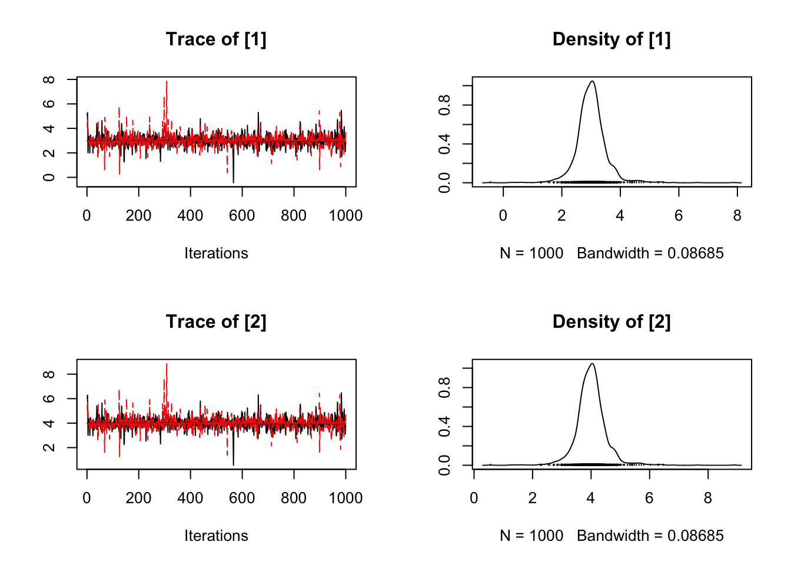

mcmcr
Introduction
mcmcr is an R package to manipulate Monte Carlo Markov Chain samples.
Utilisation
library(mcmcr)
#> Loading required package: coda
#> Loading required package: dplyr
#>
#> Attaching package: 'dplyr'
#> The following objects are masked from 'package:stats':
#>
#> filter, lag
#> The following objects are masked from 'package:base':
#>
#> intersect, setdiff, setequal, union
mcmcr <- mcmcr:::mcmcr
nchains(mcmcr)
#> [1] 2
niters(mcmcr)
#> [1] 1000
parameters(mcmcr)
#> [1] "alpha" "beta" "sigma"
nterms(mcmcr)
#> [1] 7
coef(mcmcr)
#> # A tibble: 7 x 7
#> term estimate sd zscore lower upper pvalue
#> * <S3: term> <dbl> <dbl> <dbl> <dbl> <dbl> <dbl>
#> 1 alpha[1] 3.00 0.520 5.78 2.01 4.00 0.00100
#> 2 alpha[2] 4.00 0.520 7.70 3.01 5.00 0.000500
#> 3 beta[1,1] 1.27 0.622 2.05 0.160 2.33 0.0230
#> 4 beta[2,1] 2.27 0.622 3.66 1.16 3.33 0.00100
#> 5 beta[1,2] 1.33 0.619 2.12 0.277 2.40 0.0150
#> 6 beta[2,2] 2.33 0.619 3.74 1.28 3.40 0.00200
#> 7 sigma 0.827 0.664 1.52 0.424 2.73 0.000500
rhat(mcmcr)
#> [1] 1.87
estimates(mcmcr)
#> $alpha
#> [1] 2.998247 3.998247
#>
#> $beta
#> [,1] [,2]
#> [1,] 1.265929 1.33237
#> [2,] 2.265929 2.33237
#>
#> $sigma
#> [1] 0.8265352
plot(mcmcr[[1]])
Installation
To install the latest version from GitHub
# install.packages("devtools")
devtools::install_github("poissonconsulting/mcmcr")Contribution
Please report any issues.
Pull requests are always welcome.
Please note that this project is released with a Contributor Code of Conduct. By participating in this project you agree to abide by its terms.
Inspiration
- coda and rjags